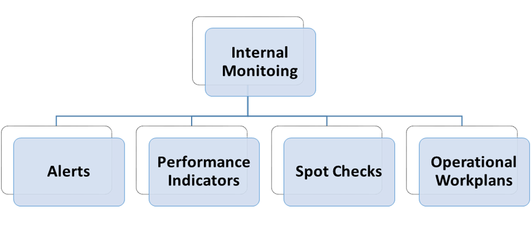
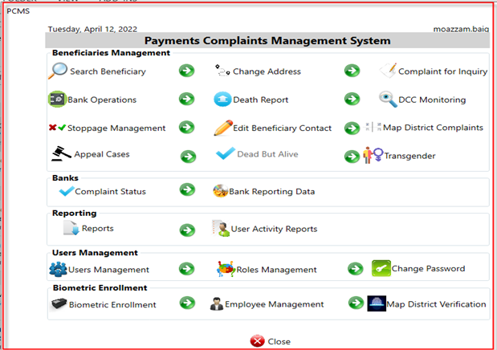

6 Monitoring and Evaluation Framework
The BISP Act, 2010 under powers and functions of the management envisages: “To take appropriate measures for effective administration, monitoring and evaluation of the programme” (Chapter-V, Section 10(e), BISP Act 2010).
Monitoring and Evaluation (M&E) wing was established in November and is an important part of an effective and efficient programme management. An M&E system has been designed for BISP to ensure that the system provides feedback and information to facilitate continuous improvement and desired performance during the programme life-cycle i.e. Targeting, Payments and Case Management. Whilst Monitoring will give BISP the descriptive information on where BISP is at any given point in time, Evaluation will determine the relevance and fulfilment of BISP objectives and effectiveness of the program. Monitoring and Evaluation are complementary in that when a monitoring system alerts that the programme is going off track, evaluation will help understand and correct the realities and tendencies shown by the Monitoring system through adjustments in the design and/or implementation process.
The objectives of BISP M&E system are the following: With respect to monitoring:
To monitor the progress of the BISP implementation and related processes in order to improve procedures and methods;
To check the operational efficiency of the BISP programs; and
To document and disseminate lessons learned from programme planning and implementation.
With respect to evaluation:
To measure the progress of output and outcome indicators against the log-frame defined for the programme;
To evaluate the impacts of the BISP; and
To provide evidence regarding the effectiveness and reliability of BISP for possible expansion and changes in the design.
6.1 Methods and Tools for Monitoring and Evaluation
Monitoring and Evaluation is split up into three broad categories: the first two being related to monitoring and the third one to evaluation. The first category deals with internal monitoring which organizes the information collected in the day-to-day operation of the programme, shows the operational progress of the different project cycle stages and includes alerts, performance indicators and operational work-plans. M&E wing has developed specialised tools tailored to the needs of BISP flagship programs to routinely and consistently gather information on the process of program implementation. M&E wing has developed spot check questionnaires, beneficiary feedback questionnaire, admission and attendance compliance tools besides other tailored tools as per the requirement of the program. Various methods are adopted to ascertain or measure the performance of any given component, project or program including Process monitoring, performance monitoring, compliance monitoring, rapid assessments, observations or spot checks, telephonic surveys to name a few methods used.
The second category is related with the external monitoring, which is carried out by external consultants. Several methods are available for External Monitoring, which include: Process Monitoring; Beneficiary Assessment; Operational Audits; and Community Scorecards. In short, monitoring of BISP programs allows stakeholders to measure the efficiency of the operation and its results may lead to improvements of operational procedures.
The third category is related with the evaluation and shows the effectiveness of the programme. Its results may lead to changes or modifications in the design parameters of the programme. There are two types of evaluations: one deals with the measurement of changes of outputs and outcomes against benchmarks defined in the log frame; and the other type measures the net impact on the well-being of beneficiaries.
6.2 Internal Monitoring
Personnel of the Programme (concerned wing) and M&E wing through MIS carry out the Internal Monitoring. While it is important to assign monitoring function to M&E to ensure transparency and ascertain an independent view of ongoing activities there maybe instances where independent or joint monitoring visits are undertaken by concerned wing. Independent visits by concerned wing are an important aspect to ascertain program progress and highlight issues for course correction by the wing. However, it must be ensured that M&E is involved in development, planning and approval process of such activity with any wing undertaking monitoring activities. This will ensure that duplication of effort in terms or time and resources is eliminated, will further enhance transparency of activities and technical expertise of M&E wing will be better utilized for satisfactory end product or results.
The Internal Monitoring is based upon the information received by BISP through either spot checks, assessment, interviews, surveys or information in the MIS system including Dashboard(s) which, in turn, produces pre-designed reports for all levels of management, program alerts and a series of indicators to make progress comparisons. It involves routine and periodic measurement of inputs, activities, and outputs during implementation. Internal Monitoring is utilized to learn about programme’s progress and is also used as a warning system to identify any shortcomings with regard to the delivery of inputs and execution of activities, so that corrective measures can be undertaken in time. Internal monitoring is done utilizing various sources including respective wing monitoring resources, M&E wing resources and MIS.
The MIS gathers stores and processes all the information of each of the BISP processes: Targeting; WeT Registration and Enrolment; Payments; PCMS. The Monitoring Module of the MIS produces lists of indicators, which serve to develop monthly, quarterly, semi-annually and yearly reports as required. Managers produce those reports in accordance to their level of authority as well as geographic aggregation, i.e. National, Province, District, Tehsil and Union Council levels.
The data for Internal Monitoring is organized by M&E and concerned wings the BISP-SN Management Information System. Using this information, following types of indicators and tables can be produced:
Alerts system;
Program process indicators;
Operational Plans;
Spot Checks and Beneficiary Feedback; and
Web based system with general program information.

6.3 Alerts System
One goal of carrying out monitoring is to identify potential or actual problems concerning the different stages of the implementation in general and individual problems faced by receiver women. Thus, this information in the form of alerts are continuously generated by the MIS so that PCMS cases are generated and corrective measures are taken in a timely manner. The alert system used for the BISP allows all concerned stakeholder not only to have access to the necessary data, but further provides information on the kind of difficulty as well as its urgency. For that reason, all alerts are flagged with different colours depending on the exigency of solving the case.
Alerts could be of two types: for individual beneficiaries; or for a specific group of beneficiaries, geographic area, payment agency branch and others. The first type generates case management procedures oriented to individual beneficiaries. The second type generates case management procedures oriented to agencies, branches and offices in charge of processes that requires to undertake corrective actions. In terms of level of alerts, three different classes are produced. A green alert simply provides information about the case and indicates the need to analyse whether all actions of the implementation are carried out as planned. A yellow alert stands for a warning which notifies the concerned stakeholder that there is an emerging or pending problem. Those cases might not need an immediate handling, but should be investigated further. A red flag announces an immediate case that should be managed right away. Thus, the alert system with its various flags indicates the source of problem as well as guidance on the urgency of handling the respective cases.
6.4 Programme Process Indicators
The MIS generates a series of performance indicators accessible on a daily basis which may serve as alerts for the management. The MIS monitoring module can be accessed at any time by all different management levels and provides detailed information on all possible programme processes and issues associated with them (such as Targeting, Payments and PCMS). The MIS can produce daily summaries of the major indicators in order to ensure a continuous update on most urgent or important issues. These indicators are specifically created for and tailored to the different levels of authority.
6.5 Web Based System with general reports
Web based general reports are created by BISP-SN, based on data that is collected through the different processes. The aim of providing on the website general statistics is to allow all concerned users access to overarching statistical information. The statistics would cover the different processes of the Programme’s implementation, i.e., Targeting, Payment and Case Management.
6.6 Operational Plans
The different BISP units and offices, having detailed listed activities, deadlines and responsibilities, prepare annual and quarterly operational plans. They also list the timelines against the tasks. A regular monitoring of these operational plans and development of progress reports at various stages helps to access the programme implementation and achievements.
6.7 Spot Checks and Beneficiary Feedback
BISP operation is scattered throughout the country where the primary interaction of BISP beneficiary with BISP is at tehsil level for enrolment, payment and grievance. M&E wing undertakes Spot Checks and Beneficiary Feedback through field visits on regular basis to help management understand the ground realties and bottlenecks faced by the beneficiaries as well as tehsil offices. It helps to observe functioning of payment delivery mechanisms, payment issues, behaviour of BISP and partner organizations with beneficiaries and level of transparency, effectiveness and efficiency of the grievance procedures beneficiary feedback provides useful insights into beneficiaries’ perception about BISP’s system of communication, payment schedules, efficiency of the payment mechanisms, transaction costs.
6.8 Evaluation
Evaluation aims to assess BISP effectiveness. Independent external evaluators will conduct Output Evaluations (log frame indicators) and Impact Evaluation. The output evaluation or log frame monitoring includes inputs, outputs and outcomes that need to be measured to monitor the achievement of annual benchmarks. For this, the M&E wing will use the M&E system to collect the information and, in some cases, also use information generated by other agencies of the Government. Impact evaluation assesses how cash transfers affect food expenditure, education and nutrition outcomes, child labour supply, as well as women’s social status. The evaluation normally includes a baseline survey (between targeting and first payment) and at least two follow up surveys to build a panel dataset on the same households to assess the impact of the program in the medium and long term. The process of impact evaluation includes selection of:
6.8.1 Methodology for Impact Evaluation
6.8.2 Instruments for Impact Evaluation
The impact evaluation uses randomly assigned treatment and control groups to assess the changes that can be attributed to the BISP intervention. In both treatment and control groups, a random sample from beneficiary families and non-beneficiary families is selected. The questionnaire generally includes a consumption module to capture the potential impact of BISP-SN on consumption, a household decision making module to capture the potential impact of BISP on the dynamics of decision making within families given that cash transfer is provided to the women of the families, a self-perception of social status module for the same reason mentioned above, a child education and child labour module to capture the potential impact of BISP.
6.9 Uuse of Internal Monitoring System
6.9.1 Internal Monitoring Through MIS
BISP Management Information System has a very crucial role in internal monitoring. The MIS would help to track the progress of different targets and goals of the programme. The MIS facilitates the Monitoring process through following:
The MIS provides summarized tables for top and middle management in order to give an overview of the programs being run;
The database of the BISP MIS further provides information and alerts to monitor and track the progress against the objectives; and
Indicators on different processes of the programme, such as Targeting, Payment and payment Management facilitate to monitor the efficiency and effectiveness of the programme.
6.9.2 Information Indicators – Generated Through MIS for Different Levels Of BISP-SN Management
Summarizing tables are an essential tool for the management unit. Whilst all detailed information is accessible through the BISP MIS Monitoring Module, the summarizing tables allow for a quick overview of the major processes. This way, the managing units would be able to effectively control the key data on a daily basis. If necessary, and in case of any pending or existing difficulties, the respective staff that is responsible for the handling of those cases can be informed by the management and take corrective measures by analysing the more elaborated information of the MIS Management Module.
6.9.3 MIS Generated Information by Management Levels
The MIS generates the most crucial information for all levels of management of the BISP, including the BISP Board, Chairperson/Federal Minister and MD/Secretary BISP with the objective to support their decision making on various policy issues, revision of programme design and management, approval of annual planning and review reports, approval of work plans and decisions regarding budget.
The senior management would be informed on major indicators only, in order to time-effectively provide an overarching overview. In case, emerging or pending problems are observed, the management can advise the concerned personnel to take actions based on the more elaborated indicators out of the MIS Monitoring Module.
With respect to the middle management, which is also referred to as the operational management, the summarizing tables contain aggregated yet more detailed information than that available to the senior management. Since the operational management has to look after the programme’s design and its implementation; therefore, it needs procedurally and geographically segregated information. This information would help to track the progress through quantitative and qualitative indicators, draft work plans and provide input for quarterly and mid-term progress reports.
It is, however, important to note that the MIS is flexible enough to be adjusted to the specific needs of the Programme and its Management Unit. Thus, in case indicators in the following sample information sheets have to be added or deleted, geographic filters and range of frequency can be selected in order to get desired information in report form. Thus, MIS can be changed in accordance to the needs of BISP-SN.
6.10 General Statistics and Reports
BISP generate general statistics on the basis of data collected through different processes. The objective of general statistics is to provide adequate statistical information to various users. The statistics includes information/data on Targeting process, Payment process and payment Management process, which would be based on range of sources of information such as MIS, monitoring data collection, process evaluation and different reports. The principal objective is to provide comprehensive and timely information on BISP through its MIS.
6.10.1 Geographic Coverage
Geographic coverage shows the information regarding specific or selected province, district, tehsil and UCs. Having selected geographic coverage, progress on processes and activities can be seen by selecting following statistical indicators:
6.10.2 Targeting Indicators
By selecting Targeting indicators following check boxes would appear showing Number of Districts Covered, Number of Beneficiaries Surveyed, Number of Households to which the Poverty Scorecard has been applied, Number and Percentage of Families Identified as Eligible, Number and Percentage of Adult Ever-married Women who need to obtain a CNIC, Number and Percentage of Receiver Women included in the Payment List that are pending to benefit from BISP.
6.10.3 Payment Status
Payment status information includes number of Beneficiaries, Payment Received, Payment Not Received, Percentage of Payments delayed, Percentage or Number of Payments delayed for the maximum period of consecutive payment cycles, Percentage of Payment Agency branches that did not complete payments and Percentage of Discrepancies in Payment amount etc.
6.10.4 Payment Complaint Management System
Case management selection provide the option to see percentage or number of all appeals, complaints and updates received and acted upon and other multiple options.
